Isola Saona · Punta Cana
L’isola Saona, prenotata prima di atterrare.
Catamarano con open bar, la piscina naturale e il pranzo in spiaggia, con prelievo al tuo hotel. Vedi l’orario di prelievo prima di pagare e cancelli gratis fino a 24 ore prima.
- $75 a persona adulta
- Cancellazione gratuita fino a 24 h
- Prelievo in hotel incluso
Risposte immediate su WhatsApp e un titolare dietro ogni escursione
5.0 su Google · Leggi le recensioniBambini 5–8 anni $37.50
0–4 gratis · da 9 anni prezzo adulto
- Catamarano + motoscafoOpen bar a bordo
- Piscina naturaleStelle marine, acqua alla vita
- Pranzo a buffet in spiaggiaSotto le palme di Saona
- Prelievo in hotel inclusoPunta Cana · Bávaro · Cap Cana
Cancellazione gratuita fino a 24 hPagamento sicuro Stripe
ASe vai a Punta Cana, fai Saona. Acqua turchese, cibo ottimo e un posto bellissimo.Andy A. · Recensione Google, tradotta dall’inglese
Prenotato con Excursions Punta Cana, un’azienda locale di Punta Cana (CASTILLO GLOBAL LLC). Domande? WhatsApp +1 829 962 1705
La giornata a Saona
Come si svolge la giornata a Saona
Saona è l’isola che tutti immaginano quando pensano ai Caraibi: sabbia bianca, acqua turchese bassa e quasi nessuna costruzione. Ti prendiamo in hotel, circa un’ora di strada fino a Bayahibe e da lì si parte in catamarano con musica e open bar. Sosta alla piscina naturale, un paio d’ore in spiaggia con il pranzo e ritorno in motoscafo.
- Prelievo, 6:20 – 8:10Bus climatizzato dal tuo hotel. L’orario esatto dipende dall’hotel; vedi la tabella più sotto. Te lo confermiamo su WhatsApp il giorno prima.
- Circa un’ora dopoArrivo a Bayahibe e imbarco sul catamarano. Musica, rum dominicano, bibite e acqua a bordo.
- Piscina naturaleUn banco di sabbia in mare aperto con l’acqua alla vita, dove vivono le stelle marine. Guardale e fotografale, ma lasciale in acqua.
- Spiaggia di SaonaBuffet dominicano, ombra delle palme e un paio d’ore per nuotare e rilassarti sulla sabbia.
- Rientro verso le 18:00Motoscafo fino a Bayahibe e bus fino al tuo hotel.
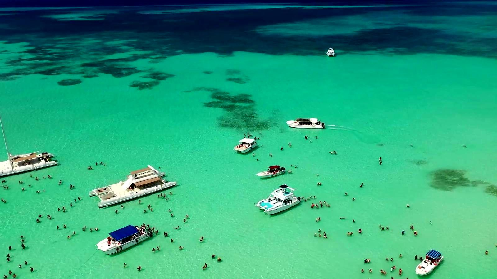
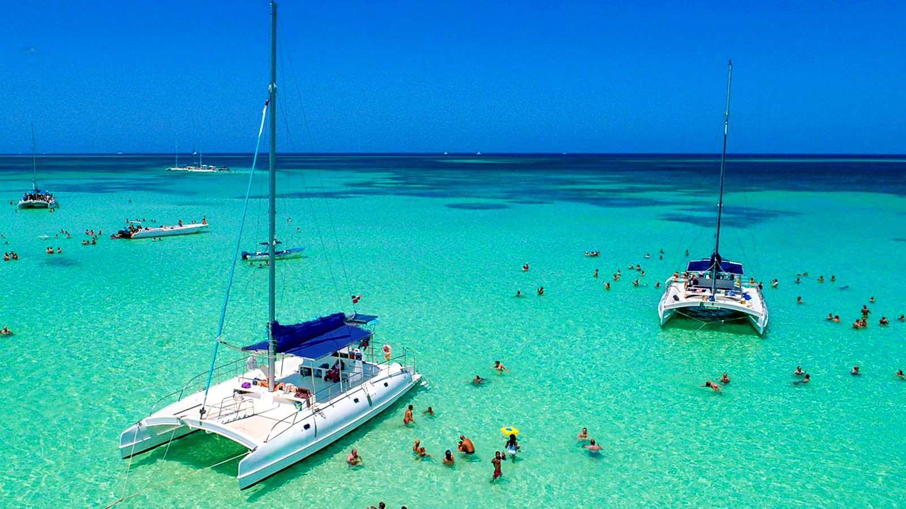
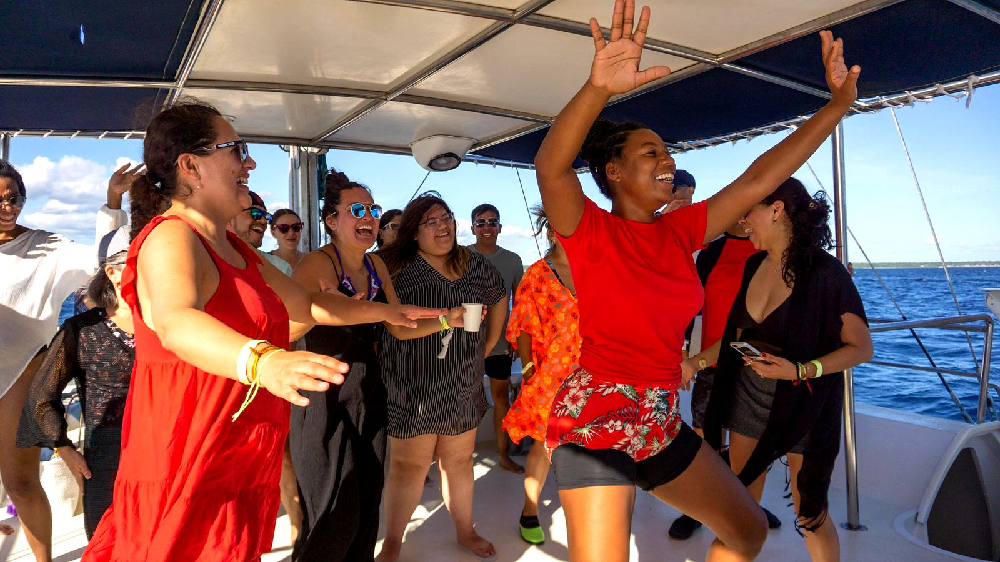
Recensioni
Cosa dicono i viaggiatori
5.0su Google
Se vai a Punta Cana, fai Saona. Acqua turchese, cibo ottimo e un posto bellissimo. Abbiamo pagato $75 ed è stato molto meglio di quello che l’hotel cercava di venderci.Andy A.Recensione Google, tradotta dall’inglese
Mi è piaciuto quanto sono organizzati. Niente lunghe attese, tutto spiegato chiaramente e sempre attenti che ci divertissimo. Lo rifarei di sicuro.Estarling D.Recensione Google, tradotta dallo spagnolo
Ottima agenzia di escursioni. Disponibile 24 ore su 24, ottime valutazioni e prezzi onesti. Tutto ben organizzato, ideale per godersi Punta Cana senza pensieri. La consiglio!Pedro P.Recensione Google, tradotta dallo spagnolo
Tutte le escursioni
Escursioni da Punta Cana
Ogni escursione include il prelievo al tuo hotel. Prezzi in dollari USA.
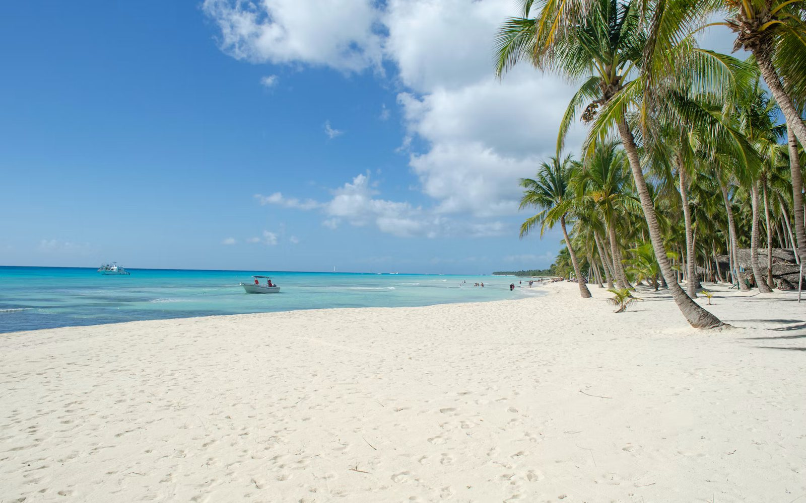
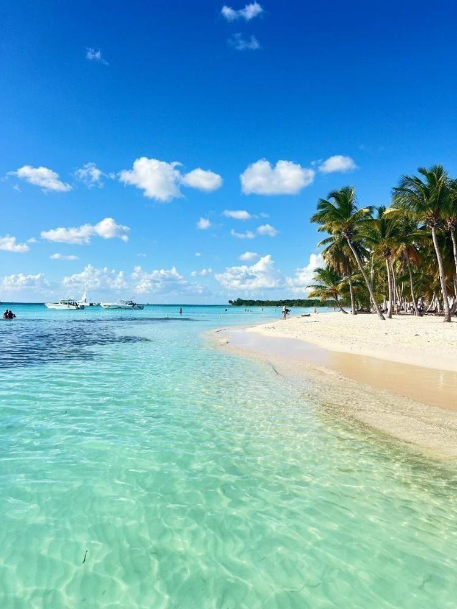
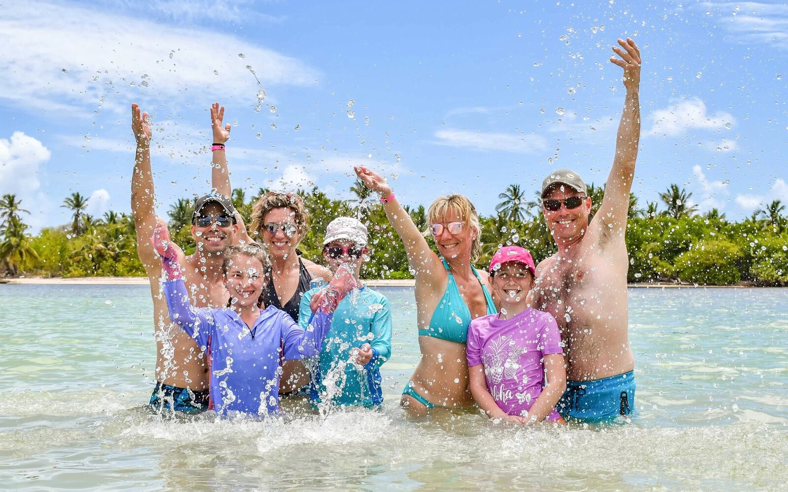
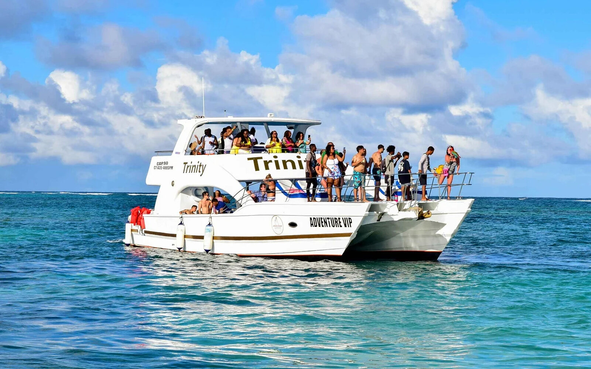
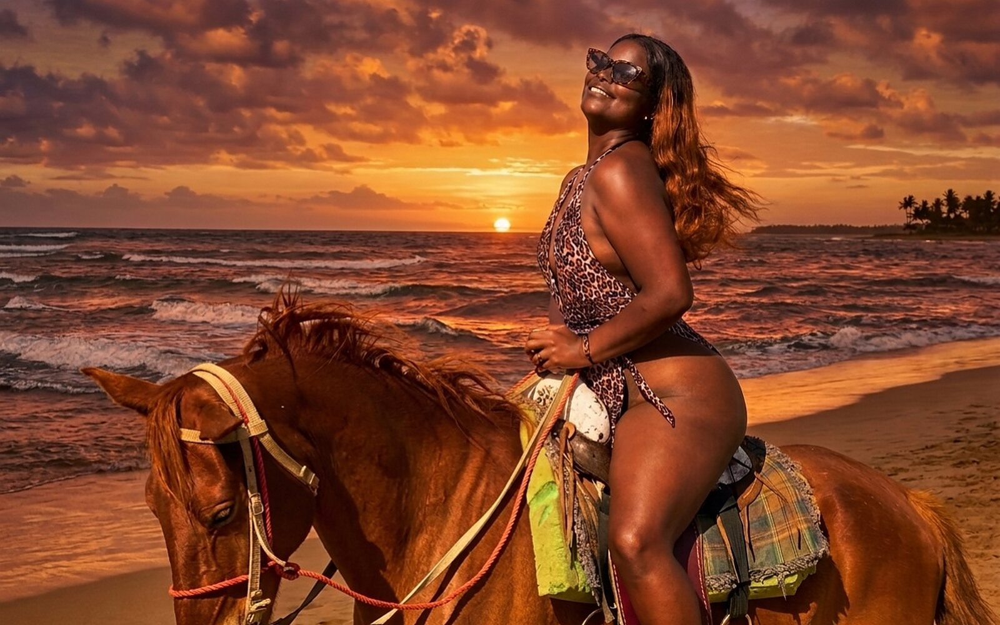
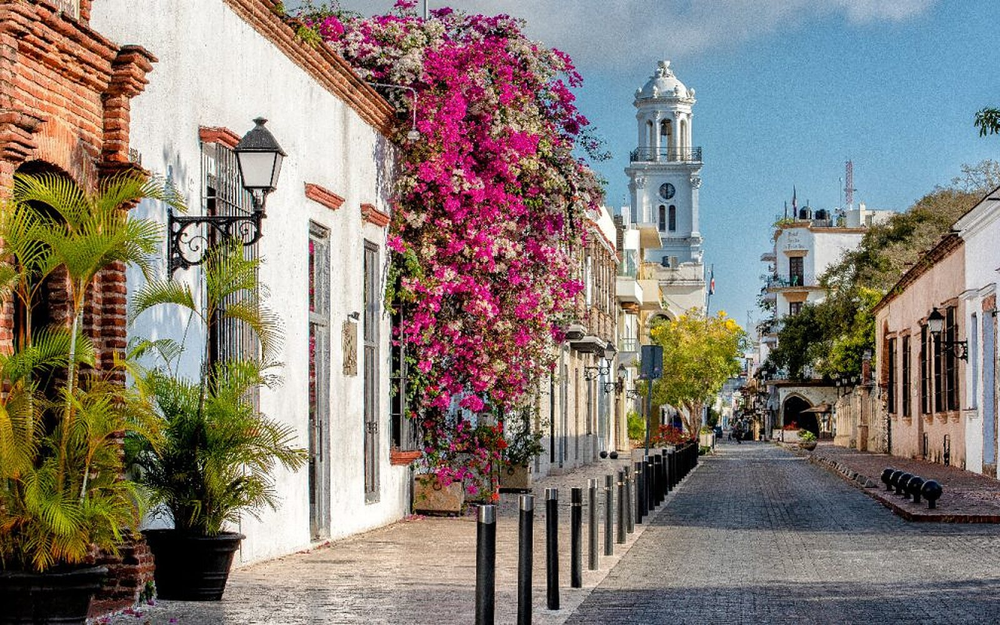
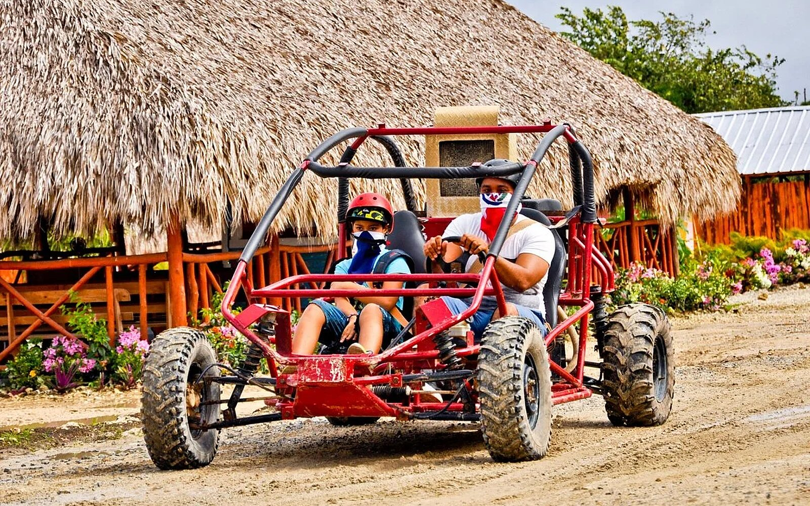
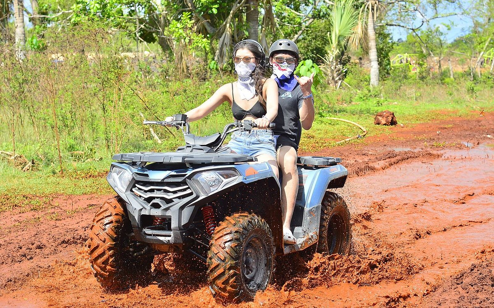
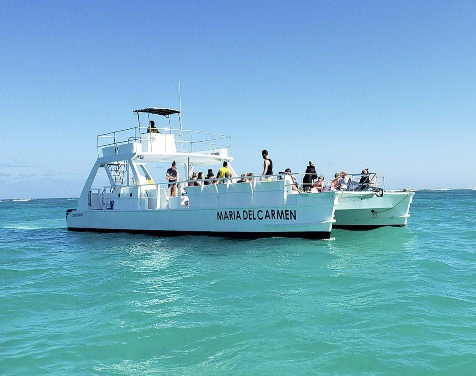
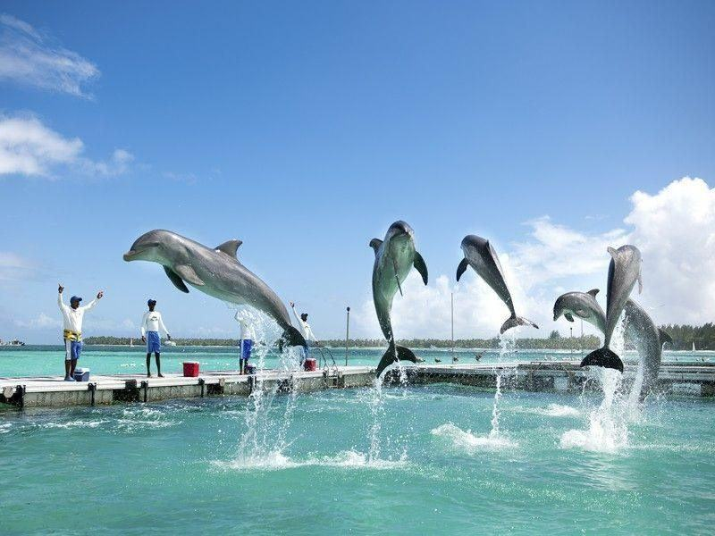
Prenotazione
Come si prenota
- Scegli la data e pagaIl pagamento con carta tramite Stripe richiede circa un minuto.
- Ricevi il bigliettoRicevuta e biglietto arrivano subito via email.
- Confermiamo il prelievoIl giorno prima, su WhatsApp, con l’orario esatto al tuo hotel.
Perché prenotare con noi
Perché prenotare con noi
Un solo contatto per tutto
Prenotazione, pagamento, conferma del prelievo e qualsiasi imprevisto del giorno: un solo numero WhatsApp gestisce tutto.
Risposte immediate, un titolare vero
Risposte su WhatsApp in pochi secondi, e Carlos, il titolare, risponde personalmente della tua giornata.
Cambio di programma? Cancelli gratis
Rimborso completo fino a 24 ore prima. Se il meteo fa annullare l’uscita da parte nostra, nuova data o rimborso.
Un prelievo verificabile
Ogni orario per hotel è su questa pagina, prima di pagare.
Prelievo
Orari di prelievo per zona
Orari per Saona, Catalina e Santo Domingo. L’orario esatto viene confermato su WhatsApp il giorno prima.
| Zona | Hotel | Prelievo |
|---|---|---|
| Uvero Alto ($85, min. 4) | Zoetry, Sivory, Excellence, Sirenis, Breathless, Dreams Onyx, Live Aqua, Nickelodeon, Royalton Chic | 6:20 – 6:45 AM |
| Macao | Hard Rock, Dreams Macao | 6:45 – 6:50 AM |
| Bávaro nord | Riu, Occidental Caribe, Royalton, Majestic, Bahía Príncipe, Iberostar | 7:05 – 7:35 AM |
| Bávaro centro | Ocean Blue, Princess, Vik Arena Blanca, Palladium, Impressive, Dreams Royal Beach | 7:10 – 7:55 AM |
| Bávaro sud | Meliá, Lopesan (Costa Bávaro, Caoba Lagoon, Serenity Bay, Splash Cove), Barceló | 7:55 – 8:00 AM |
| Cabeza de Toro | Dreams Palm Beach, Be Live, Serenade, Catalonia, Sunscape Coco, Radisson | 7:30 – 8:10 AM |
| Punta Cana | Club Med, Four Points, Westin, Tortuga Bay | 7:45 – 8:00 AM |
| Cap Cana ($85, min. 4) | Sanctuary, Hyatt Ziva & Zilara, Secrets, Eden Roc, TRS, Ancora | 7:30 AM |
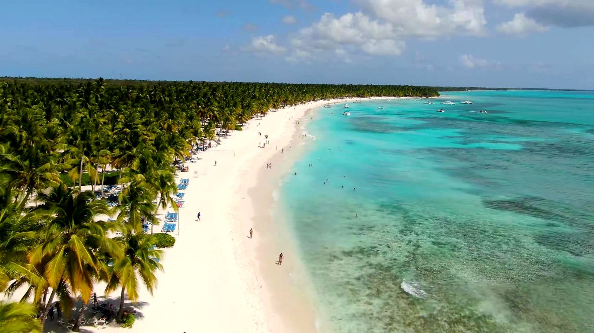
Due parole dal titolare
“Sono Carlos, il titolare di Excursions Punta Cana. Su WhatsApp ricevi risposte subito, giorno e notte. E se qualcosa va storto il giorno della gita, lo risolvo io di persona, non un call center.”
Carlos · Titolare, Excursions Punta CanaFAQ
Domande e condizioni
Hai ancora una domanda? Scrivici su WhatsApp e rispondiamo subito, in italiano, inglese o spagnolo.
Chiedi su WhatsAppVale la pena andare all’Isola Saona?
Per la maggior parte dei visitatori, sì. È la classica giornata caraibica: gita in catamarano, piscina naturale con stelle marine e una spiaggia di palme quasi senza costruzioni. È una giornata lunga, con circa un’ora di bus per tratta fino a Bayahibe, quindi è adatta a chi vuole una giornata intera fuori e non una gita breve.
Quanto costa l’escursione a Saona?
$75 per adulto e $37.50 per i bambini da 5 a 8 anni. I bambini da 0 a 4 anni non pagano e dai 9 anni pagano il prezzo adulto. Il prezzo include prelievo in hotel, catamarano, motoscafo, open bar e pranzo.
Quanto dura la giornata?
Il prelievo è tra le 6:20 e le 8:10 a seconda dell’hotel, e si rientra verso le 18:00.
Catamarano o motoscafo?
Entrambi. Andata in catamarano con musica e open bar, ritorno in motoscafo.
Cos’è la piscina naturale?
Un banco di sabbia in mare aperto con l’acqua alla vita, dove vivono le stelle marine. Puoi guardarle e fotografarle, ma lasciale in acqua.
Cosa è incluso?
Prelievo e rientro in hotel, catamarano e motoscafo, open bar con bevande locali, pranzo a buffet dominicano, sosta alla piscina naturale e guida. Mance e bevande premium non incluse.
A che ora mi vengono a prendere in hotel?
Dipende dalla zona; la tabella in questa pagina le elenca tutte. Ti confermiamo l’orario esatto su WhatsApp il giorno prima. Il bus aspetta 10 minuti a ogni hotel.
Non alloggio in hotel. Potete venirmi a prendere?
Sì. Se alloggi in un Airbnb o in una villa, ti preleviamo all’ingresso dell’hotel più vicino sul nostro percorso, oppure ci raggiungi al nostro punto d’incontro. Lo concordiamo con te prima dell’escursione.
Cosa devo portare?
Costume, asciugamano, crema solare biodegradabile, un cappellino, un cambio asciutto e un po’ di contanti se vuoi lasciare la mancia.
È adatta ai bambini?
Sì. I bambini da 5 a 8 anni pagano metà prezzo, da 0 a 4 non pagano e dai 9 anni pagano il prezzo adulto. La piscina naturale è bassa e le famiglie fanno questa gita ogni giorno. Il Party Boat è l’unica escursione solo per adulti.
Ci sono sargassi a Saona?
Dipende dalla stagione e dal meteo. Se sei preoccupato per una data precisa, scrivici e ti diciamo cosa vedono le barche quella settimana.
Soffrirò il mal di mare?
Il catamarano è tranquillo. Il motoscafo del ritorno è più veloce e può essere movimentato nei giorni di vento. Se soffri il mal di mare, prendi il tuo solito rimedio prima della gita. Se sei incinta, consulta il tuo medico e scrivici prima.
Come pago? È sicuro?
Con carta, su una pagina di pagamento sicura di Stripe. Stripe ti invia subito la ricevuta via email e noi ti mandiamo il biglietto subito dopo. Non accettiamo contanti al prelievo.
Posso cancellare o cambiare data?
Cancella fino a 24 ore prima per il rimborso completo. Puoi anche cambiare data una volta, gratis, fino a 24 ore prima. A meno di 24 ore non c’è rimborso.
Perché prenotare direttamente con voi?
Paghi $75 per adulto con prelievo in hotel, pranzo e open bar inclusi, e vedi l’orario di prelievo prima di pagare. Lo stesso numero WhatsApp risponde prima, durante e dopo la gita, e puoi cancellare gratis fino a 24 ore prima.
Conviene prenotare in anticipo?
Sì. I bus sono organizzati per giro di hotel e si riempiono nei fine settimana e nei giorni festivi. Prenotare due o tre giorni prima ti garantisce la data, e puoi comunque cancellare gratis fino a 24 ore prima.
Parlate italiano?
Sì. Rispondiamo su WhatsApp in italiano. Il biglietto e la conferma del prelievo possono arrivare in inglese.
Qualcuno cercherà di vendermi qualcosa?
Noi no: $75 è tutto ciò che chiediamo, e al prelievo non prendiamo contanti. Sull’isola ci sono venditori e fotografi indipendenti, come su ogni spiaggia dei Caraibi. Basta un no gentile.
Ci sono costi extra al pagamento?
No. Il totale che vedi sul pulsante è quanto viene addebitato sulla carta. Stripe invia subito la ricevuta via email.
E se piove?
Una pioggia leggera non ferma la gita. Se il porto chiude per sicurezza e la gita viene annullata da noi, scegli una nuova data o il rimborso completo.
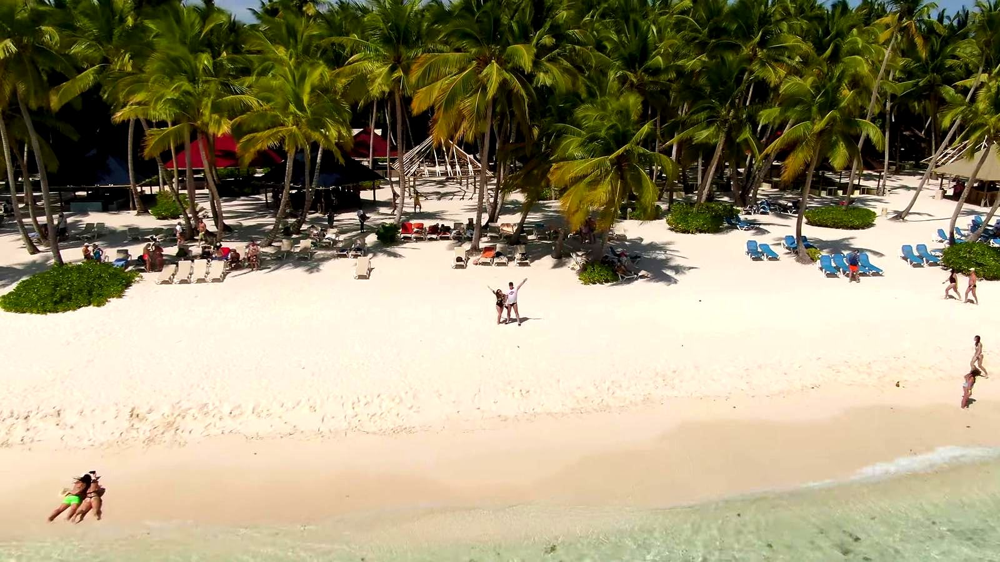
Pronto per Saona?
Scegli una data, paga in sicurezza e l’orario di prelievo ti arriva su WhatsApp. Cancellazione gratuita fino a 24 ore prima.